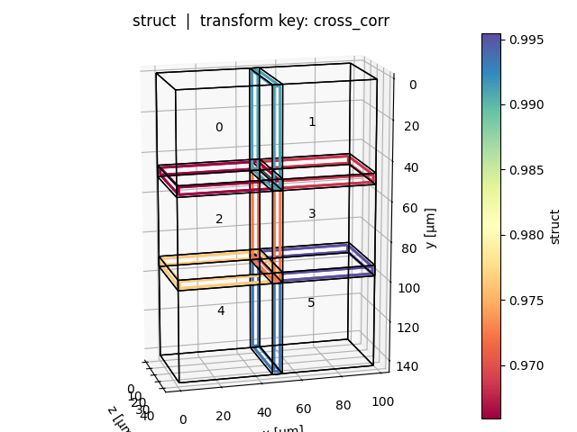
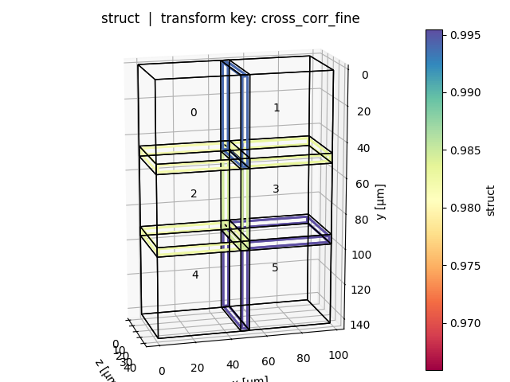
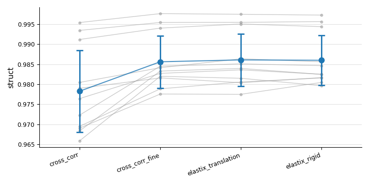

Registration quality metrics
After running registration it is useful to verify how much better (or worse) a given transform key actually aligns the tiles compared to the initial positions.
multiview_stitcher.metrics provides two functions for this purpose:
| Function | Purpose |
|---|---|
metrics.tile_pair_image_metrics |
Compute image similarity metrics in the overlap region for every adjacent tile pair – supports two modes (see below) |
vis_utils.plot_tile_pair_image_metrics |
Visualise the results as a positional tile graph and/or a summary overview plot |
Two modes
tile_pair_image_metrics accepts exactly one of:
query_transform_keys(Mode 1) — pairs are derived automatically from spatial overlap; metrics are evaluated under each named transform key, enabling side-by-side comparison (e.g. stage position vs. registered).pairs_graph(Mode 2) — pairs and their transforms are taken directly from a pre-computed pairwise registration graph (e.g.g_reg_computedfromregistration.compute_pairwise_registrations). Each edge contributes one candidate. Useful for quality assessment and pair filtering between the pairwise and global resolution steps.base_transform_keyis still required: it defines the overlap geometry and is used to convert each world-space edge transform into the intrinsic sampling convention (p_moving = inv(T_moving_base) @ T_edge @ T_fixed_base).
How it works (Mode 1)
The steps below apply to Mode 1 (query_transform_keys). In Mode 2 the pair list and candidate transforms come from the supplied pairs_graph; the overlap geometry and sampling steps (2–4) are identical.
1 – Overlap region (base_transform_key)
For each adjacent tile pair the overlap bounding box is computed in the world coordinate system defined by base_transform_key.
An optional max_tolerance shrinks this box on every side, ensuring the comparison region stays fully inside both tiles even if the query transform deviates from the base by up to that physical distance.
2 – Fixed image in intrinsic space
The bounding box is projected into the intrinsic (physical) space of the fixed tile via inv(T_fixed_base).
The fixed tile is always sampled with an identity transform, guaranteeing that exactly the same pixels contribute to the comparison regardless of which query key is being evaluated.
3 – Moving image under each query transform
For each query_transform_key the moving tile is resampled as:
$$ p_\text{moving} = T_\text{moving,q}^{-1} \cdot T_\text{fixed,q} $$
This means the relative placement of fixed and moving tiles reflects purely the query transforms, making metric values directly comparable across keys.
4 – Metric functions
Any callable with signature func(im1: np.ndarray, im2: np.ndarray) -> float can be used.
NaN pixels (outside the image domain after resampling) are handled by the built-in normalized_cross_correlation; third-party metrics (e.g. from skimage.metrics) should be wrapped with functools.partial if extra arguments are needed.
Usage example
Mode 1 – compare multiple transform keys
import functools
import skimage.metrics
from multiview_stitcher import metrics, vis_utils
# --- compute metrics ---
metrics_result = metrics.tile_pair_image_metrics(
msims,
base_transform_key='cross_corr', # defines overlap region
query_transform_keys=[
'cross_corr',
'elastix_translation',
'elastix_rigid',
],
metric_funcs={
'ncc': metrics.normalized_cross_correlation,
'struct': functools.partial(
skimage.metrics.structural_similarity,
data_range=1000,
),
},
max_tolerance=1, # shrink comparison box by 1 physical unit on each side
)
# --- visualise (works with both modes) ---
vis_utils.plot_tile_pair_image_metrics(
msims,
metrics_result,
base_transform_key='cross_corr',
metric_key='struct', # which metric to colour-code
query_transform_keys=[
'cross_corr',
'elastix_translation',
'elastix_rigid',
],
show_plot_positions=True, # tile graph coloured by metric value per query key
show_overview_plot=True, # summary: per-pair lines + mean ± std across keys
)
Mode 2 – evaluate a pre-computed registration graph
from multiview_stitcher import metrics, registration
# g_reg_computed is the output of registration.compute_pairwise_registrations()
metrics_result = metrics.tile_pair_image_metrics(
msims,
base_transform_key='affine_metadata',
pairs_graph=g_reg_computed,
)
Output – metrics_result
The returned dictionary has two top-level keys:
{
"pairs": {
(0, 1): {
"cross_corr": {"ncc": 0.91, "struct": 0.87},
"elastix_translation": {"ncc": 0.95, "struct": 0.93},
...
},
...
},
"summary": {
"cross_corr": {"ncc": 0.88, "struct": 0.84},
"elastix_translation": {"ncc": 0.94, "struct": 0.91},
...
}
}
All metric values are plain Python float.
Visualisation
Positional plot (show_plot_positions=True)
One plot per query key: tiles are shown in world space, edges between adjacent tile pairs are coloured by the selected metric value (blue = high, red = low). Tile bounding boxes can be toggled with show_bboxes.


Overview plot (show_overview_plot=True)
A single figure showing all tile pairs as grey lines across query keys, with a blue mean ± std trend on top. This makes it easy to see at a glance whether a registration method improved alignment consistently across all pairs.

API reference
Registration quality metrics for multiview-stitcher.
This module provides tools to assess the quality of image registration by comparing image content in the overlap regions between adjacent views, after pre-transforming them according to one or more candidate transform keys.
Main entry point: tile_pair_image_metrics.
Built-in metric function
normalized_cross_correlation – normalised cross-correlation (NCC) between
two images that may contain NaN values in non-overlapping areas.
Additional metric functions, such as those from :mod:skimage.metrics, can be
passed through the metric_funcs argument as long as they conform to the
signature func(im1: np.ndarray, im2: np.ndarray) -> float.
tile_pair_image_metrics(msims, base_transform_key, query_transform_keys=None, metric_funcs=None, max_tolerance=None, spacing=None, bidirectional=False, metric_channel=None, n_parallel_pairs=None, input_res_level=None, *, pairs_graph=None)
Calculate registration quality metrics for a list of views.
Two modes are supported, selected by providing exactly one of
query_transform_keys (Mode 1) or pairs_graph (Mode 2):
Mode 1 – pairs are determined automatically from the spatial overlap
of the views under base_transform_key; metrics are evaluated under
each of the supplied query_transform_keys, enabling comparison across
multiple candidate transforms (e.g. stage vs. registered).
Mode 2 – pairs and their transforms are taken directly from a
pre-computed pairwise registration graph (pairs_graph, e.g.
g_reg_computed from :func:registration.compute_pairwise_registrations).
Each edge contributes one candidate (its "transform" attribute).
Useful for quality assessment and pair filtering between the pairwise
registration and global resolution steps.
base_transform_key is still required in this mode: it is used both
to determine the overlap region between each pair of views and to
convert the world-space edge transform into the intrinsic sampling
convention (p_moving = inv(T_moving_base) @ T_edge @ T_fixed_base).
For each pair the function:
- Uses base_transform_key to determine the overlap region between the two views and computes a comparison bounding box (optionally shrunk by max_tolerance from the overlap boundary).
- Projects the comparison bbox into the fixed image's intrinsic
(physical) space via
inv(T_fixed_base). The fixed image is sampled with an identity transform (always the same pixels across all query keys). The moving image is sampled withinv(T_moving_q) @ T_fixed_q, i.e. fixed-intrinsic → world via the query fixed transform, then world → moving-intrinsic. The relative positioning of fixed and moving therefore reflects exclusively the query-key transforms, making metrics comparable across keys. - Applies every metric function to the pre-transformed image pair.
Only the first time point (and first channel) of each view is used.
Parameters
msims : list of MultiscaleSpatialImage
Input views.
base_transform_key : str
Transform key that defines the reference spatial layout. Used
in both modes to (1) compute the overlap region between each
pair of views and (2) position the fixed image for sampling. In
Mode 2 it is additionally used to convert the world-space edge
transform from pairs_graph into the intrinsic sampling
convention: p_moving = inv(T_moving_base) @ T_edge @ T_fixed_base.
query_transform_keys : str or list of str, optional
Mode 1 — one or more transform keys to evaluate. Each key must
exist in every input view. Mutually exclusive with pairs_graph.
metric_funcs : dict[str, callable], optional
Maps arbitrary string keys to metric functions. Each function
must have the signature
func(im1: np.ndarray, im2: np.ndarray) -> float.
NaN values in the pre-transformed images (outside the image
domain) can occur and the metric functions should
handle them gracefully.
Defaults to {"ncc": normalized_cross_correlation}.
To pass additional keyword arguments to a metric function, wrap it
with :func:`functools.partial` before including it in the dict::
from functools import partial
from skimage.metrics import structural_similarity
metric_funcs = {
"ncc": metrics.normalized_cross_correlation,
"ssim": partial(structural_similarity, data_range=1.0),
}
max_tolerance : float, dict, or None, optional
Physical distance by
which the comparison bbox is shrunk on every side relative to the
overlap boundary. This guarantees that the comparison bbox
remains valid for any query transform that deviates from the base
by at most max_tolerance physical units. Pixels that are included
in the axis-aligned comparison bbox but lie outside of the
shrunk overlap halfspace intersection are set to NaN before metric evaluation.
A float value is applied uniformly across all spatial dimensions;
a dict maps spatial dim names to per-dimension values.
None means no shrinkage.
spacing : dict or None, optional
Spacing at which images are pretransformed before metric
evaluation. A dict maps spatial dim names to per-dimension
values. None (default) uses the finest spacing of the fixed
image for each pair, preserving the full resolution of the
reference view.
bidirectional : bool, optional
When False (default) only one directed edge per adjacent pair is
built, with the lower view index as fixed and the higher as moving.
This halves the computation cost. When True both directions
(i → j) and (j → i) are evaluated independently.
metric_channel : scalar or None, optional
Channel coordinate value to use when selecting the channel for metric
computation. When None (default) the channel at index 0 is used.
Has no effect for views without a "c" dimension.
n_parallel_pairs : int or None, optional
Maximum number of directed pairs to compute in parallel. When
None (default) all pairs are computed in a single :func:dask.compute
call. For 3D data this defaults to 1 to limit memory usage.
Setting this to a small integer batches the computation, reducing peak
memory at the cost of reduced parallelism.
input_res_level : int or None, optional
Resolution level index used to select the image scale for metric
computation. 0 is the finest level ("scale0"), 1 is
"scale1", etc.
* When ``None`` and *spacing* is also ``None``: defaults to ``0``
(finest resolution).
* When ``None`` and *spacing* is provided: the coarsest level whose
actual spacing is still ≤ *spacing*, selected independently for
each pair, based on the fixed image.
pairs_graph : nx.Graph, optional
Mode 2 — a pre-computed pairwise registration graph (e.g.
g_reg_computed returned by
:func:registration.compute_pairwise_registrations). Each edge
must carry a "transform" attribute (the world-space pairwise
affine, lower-index view → higher-index view). The edges define
which pairs are evaluated; each edge contributes a single candidate
transform. Mutually exclusive with query_transform_keys.
The output "pairs" dict uses "transform" as the candidate
key.
Returns
dict with keys:
"pairs"– :class:dictmapping directional-pair tuples(fixed_idx, moving_idx)to dicts of the form{candidate_key: {metric_key: float}}, wherecandidate_keyis a query transform key name (Mode 1) or"transform"(Mode 2)."summary"– :class:dictmapping query_transform_key to{metric_key: float}where each value is the overlap-volume-weighted mean across all directional pairs. The weight for each pair is the physical volume of the overlap region (as returned by :func:mv_graph.get_overlap_between_pair_of_stack_props). Pairs whose metric value is NaN are excluded from both the numerator and denominator.
Source code in src/multiview_stitcher/metrics.py
388 389 390 391 392 393 394 395 396 397 398 399 400 401 402 403 404 405 406 407 408 409 410 411 412 413 414 415 416 417 418 419 420 421 422 423 424 425 426 427 428 429 430 431 432 433 434 435 436 437 438 439 440 441 442 443 444 445 446 447 448 449 450 451 452 453 454 455 456 457 458 459 460 461 462 463 464 465 466 467 468 469 470 471 472 473 474 475 476 477 478 479 480 481 482 483 484 485 486 487 488 489 490 491 492 493 494 495 496 497 498 499 500 501 502 503 504 505 506 507 508 509 510 511 512 513 514 515 516 517 518 519 520 521 522 523 524 525 526 527 528 529 530 531 532 533 534 535 536 537 538 539 540 541 542 543 544 545 546 547 548 549 550 551 552 553 554 555 556 557 558 559 560 561 562 563 564 565 566 567 568 569 570 571 572 573 574 575 576 577 578 579 580 581 582 583 584 585 586 587 588 589 590 591 592 593 594 595 596 597 598 599 600 601 602 603 604 605 606 607 608 609 610 611 612 613 614 615 616 617 618 619 620 621 622 623 624 625 626 627 628 629 630 631 632 633 634 635 636 637 638 639 640 641 642 643 644 645 646 647 648 649 650 651 652 653 654 655 656 657 658 659 660 661 662 663 664 665 666 667 668 669 670 671 672 673 674 675 676 677 678 679 680 681 682 683 684 685 686 687 688 689 690 691 692 693 694 695 696 697 698 699 700 701 702 703 704 705 706 707 708 709 710 711 712 713 714 715 716 717 718 719 720 721 722 723 724 725 726 727 728 729 730 731 732 733 734 735 736 737 738 739 740 741 742 743 744 745 746 747 748 749 750 751 752 753 754 755 756 757 758 759 760 761 762 763 764 765 766 767 768 769 770 771 772 773 774 775 776 777 778 779 780 781 782 783 784 785 786 787 788 789 790 791 792 793 794 795 796 797 798 799 800 801 802 803 804 | |
normalized_cross_correlation(im1, im2)
Compute the normalised cross-correlation (NCC) between two images.
NaN pixels present in either image are excluded from the computation.
Parameters
im1 : array-like
First image (fixed). Arbitrary shape; must match im2.
im2 : array-like
Second image (moving). Arbitrary shape; must match im1.
Returns
float
NCC value in the range [-1, 1]. Returns np.nan when fewer than
two overlapping (non-NaN) pixels are available or when either image
is constant.
Source code in src/multiview_stitcher/metrics.py
plot_tile_pair_image_metrics(msims, reg_metrics_result, base_transform_key, query_transform_keys, metric_key=None, clims=None, show_bboxes=True, show_overview_plot=False, overview_pair_linewidth=1.0, show_plot_positions=True)
Visualise registration quality metrics for each query transform key.
For every entry in query_transform_keys a separate figure is produced.
Each figure shows the tile layout in that query transform key's world
coordinate space and overlays either the pairwise comparison bounding
boxes (when show_bboxes is True) or a minimalistic graph where edges
are coloured by the metric value (when show_bboxes is False).
The comparison bboxes, which are originally defined in base_transform_key
world space, are projected into each query key's world space via
T_fixed_q @ inv(T_fixed_base) (applied to the fixed tile of each pair)
before being drawn.
All figures share the same colorbar limits, derived by default from the base_transform_key metric values when it is included as a query key, so all other query keys are compared against the same reference scale.
Parameters
msims : list of MultiscaleSpatialImage
The input views, passed unchanged to :func:plot_positions.
reg_metrics_result : dict
The dictionary returned by :func:multiview_stitcher.metrics.tile_pair_image_metrics.
Must contain the "pairs" and "bboxes" keys.
base_transform_key : str
Transform key used to define the original comparison bboxes and to set
colorbar limits when it appears in query_transform_keys.
query_transform_keys : str or list of str
Subset of transform keys to visualise. Each key must appear in
reg_metrics_result["pairs"]. Tile positions and comparison bboxes
are shown in each key's own world coordinate space.
metric_key : str, optional
Name of the metric to use for colouring the comparison boxes or edges.
Defaults to the first metric key found in the result.
clims : tuple of (float, float), optional
Explicit (vmin, vmax) for the shared colorbar. When None
(default) the limits are computed from base_transform_key values
if that key is present in the result, falling back to all query-key
values otherwise.
show_bboxes : bool, optional
When True (default) the comparison bounding boxes are drawn and
coloured by metric value. When False a minimalistic
:func:plot_positions plot is produced instead, where edges between
adjacent tiles are coloured by the (mean of the two directed)
metric values.
show_overview_plot : bool, optional
When True, produce one additional figure showing a paired plot
with query_transform_keys on the x-axis and the metric value on the
y-axis for each pair. A mean ± std summary (black diamond + error
bar) is overlaid for each transform key. By default False.
overview_pair_linewidth : float, optional
Line width for the per-pair lines in the overview plot. Set to
0 to suppress the lines entirely and show only the mean ± std
summary markers. By default 1.0.
show_plot_positions : bool, optional
When True (default) the per-query-key positional plots (tile
layout with coloured comparison bboxes or coloured edges) are
produced. Set to False to skip them, e.g. when only the
overview plot is needed.
Returns
dict[str, tuple[matplotlib.figure.Figure, matplotlib.axes.Axes]]
Maps each query transform key to its (fig, ax) pair.
Source code in src/multiview_stitcher/vis_utils.py
327 328 329 330 331 332 333 334 335 336 337 338 339 340 341 342 343 344 345 346 347 348 349 350 351 352 353 354 355 356 357 358 359 360 361 362 363 364 365 366 367 368 369 370 371 372 373 374 375 376 377 378 379 380 381 382 383 384 385 386 387 388 389 390 391 392 393 394 395 396 397 398 399 400 401 402 403 404 405 406 407 408 409 410 411 412 413 414 415 416 417 418 419 420 421 422 423 424 425 426 427 428 429 430 431 432 433 434 435 436 437 438 439 440 441 442 443 444 445 446 447 448 449 450 451 452 453 454 455 456 457 458 459 460 461 462 463 464 465 466 467 468 469 470 471 472 473 474 475 476 477 478 479 480 481 482 483 484 485 486 487 488 489 490 491 492 493 494 495 496 497 498 499 500 501 502 503 504 505 506 507 508 509 510 511 512 513 514 515 516 517 518 519 520 521 522 523 524 525 526 527 528 529 530 531 532 533 534 535 536 537 538 539 540 541 542 543 544 545 546 547 548 549 550 551 552 553 554 555 556 557 558 559 560 561 562 563 564 565 566 567 568 569 570 571 572 573 574 575 576 577 578 579 580 581 582 583 584 585 586 587 588 589 590 591 592 593 594 595 596 597 598 599 600 601 602 603 604 605 606 607 608 609 610 611 612 613 614 615 616 617 618 619 620 621 622 623 624 625 626 627 628 629 630 631 632 633 634 635 636 637 638 639 640 641 642 643 644 645 646 647 648 649 650 651 652 653 654 655 656 657 658 659 660 | |